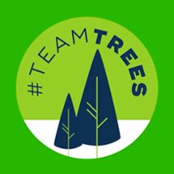

Team Trees
Let's Donate!!Planting trees for a greener planet. Join us in our mission to combat climate change and restore ecosystems worldwide.
Team Seas
Let's Donate!!Cleaning our oceans, one pound at a time. Help us remove trash and plastics from our seas, protecting marine life and preserving our oceans for future generations.

Earth Justice
Let's Donate!!Our mission is to protect the environment by advocating for laws and policies that uphold environmental justice and ensure a sustainable future for all